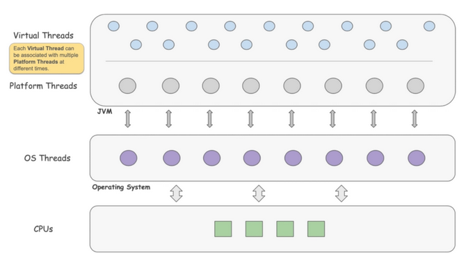

Virtual Thread

A new thread model provided by JVM, for creating lightweight application thread that maps to a platform thread
- The virtual thread can map to different platform thread at different time(Many-to-Many)
- thread stack live in heap(dynamic stack space)
Mechanism
- yield whenever it encounters IO blocking operation, made runnable again and when one becomes available
- large amount of jdk lib have rewrite for this refactor
- implementation is based on fork join pool
- context switch should be lightweight in most cases
Benefit it brings
- less overhead
- context switch occurs in application level rather than os level, stack, cache remains in hardware
- cheap to start/stop
- much lighter weight
- the tradition platform thread requires around 2MB / thread, If you wanted to support a million thread, you’d need 2TB of memory!
- virtual threads only takes up 200-300 bytes / thread
- simplicity
- write code in sequential way rather than the reactive way
- better scheduling
- scheduling by os thread is dumb as the os don't know the context of the execution thread
- on the other hand, developer have better understanding about the code and context, scheduling in application level help reduce the overhead
- scalability
- can easily support millions of virtual thread
Limitation
Pinning Issue
Pinning occurs when virtual thread cannot be unmounted from its carrier, monopolizing that carrier thread from executing other tasks
Occurs in
- Synchronized Blocks or Methods
- Native Methods or Foreign Functions
Thread Local
- as thread Local variable has its own independent copy of the variable, isolated from other threads
- caching expensive object in thread local take up huge amount of space when massive threads are created
Capable for
- IO intensive application
Bear in mind
- It is not for computational intensive task
- NOT designed highly responsive aware application(first come, first served)
- as the total throughput increase, this rule only applies on HIGHLY responsive aware application
- as it adds another layer of scheduling
- much more threads are waiting for schedule, higher chance to have starvation problem
- synchronized block is not support
Migration
-
limit carrier thread
- two ways to limit the carrier thread
- Limit the number of carrier threads by setting the system property jdk.virtualThreadScheduler.parallelism=
- Limit the maximum number of pool size by setting the system property jdk.virtualThreadScheduler.maxPoolSize=
- two ways to limit the carrier thread
-
migration is cheap, usually, one to few lines of code change, eg: changing thread pool to virtual thread factory
- migrate task to virtual thread, not pool
-
most lib and framework have stated their migration to support to virtual thread eg: spring, tomcat
-
thread local
- don't cache expensive object in thread local
- some mutable thread local object can be replaced by immutable object eg: SimpleDateFormatter -> DateTimeFormatter
- don't cache expensive object in thread local
stumbling block
- mysql jdbc
- currently not supported
- the mysql jdbc is designed to be thread safe, but the modern application usage of jdbc are thread confined
- A lock free implementation of mysql jdbc
- okio (todo hanging problem)
Best practise
- as it is lightweight, thread pool is not necessary
- limit virtual thread by semaphores
- thread per task rather than recycling the thread
- dont block long task
- causing massive virtual tasks to be blocked
Further Discussion
- combining the virtual thread with reactive model
- hard to maintain
- gain even more performance
Ref
- JEP 425
- Azul virtual thread
- Modern Scalable Concurrency for the Java Platform By Alan Bateman
- How to Diagnose and Mitigate Pinning in Java’s Virtual Thread Execution
Https Replay Attack
A subset of Man-in-the-middle(MITM) attack, that copy request and send it to the server again pretending to be you
Is it possible to perform replay attack on https connection?
- YES
How it happened?
- the current version of TLS1.3 with 0-rtt enable is vulnerable
- see Cloudflare - Zero Round Trip Time Resumption under What’s the catch?
- hacker(MITM) copy of the encrypted 0-RTT data (containing your first request) and send it to the server again to replay
- can be resolved by disabling 0-rtt on server side
- Trick the browser
- you have no control of your clients' browser, cannot be resolved on server side
- The adversary sets itself up as a TCP layer relay for the targeted TLS connection to, say, google.com.
- When the adversary detects a request that it wants to replay (using traffic analysis), it copies all relevant TLS records, and instead of relaying the HTTP response from the server it just closes the socket to Chrome. It keeps the leg to google.com open.
- Over a fresh socket, Chrome would automatically retry the (presumably failed) request. The adversary would then forward it normally to google.com.
- Adversary replays the copied records to google.com, which will happily accept them.
Conclusion
- You should always implement api that follow http semantics(eg: idempotent)
- Applications need to be replay safe to work with modern browsers, whether they support 0-RTT or not. Browsers replay data all the time due to normal network glitches
Ref
Virtual Thread
A new thread model provided by JVM, for creating lightweight application thread that maps to a platform thread
- The virtual thread can map to different platform thread at different time(Many-to-Many)
- thread stack live in heap(dynamic stack space)
Mechanism
- yield whenever it encounters IO blocking operation, made runnable again and when one becomes available
- large amount of jdk lib have rewrite for this refactor
- implementation is based on fork join pool
- context switch should be lightweight in most cases
Benefit it brings
- less overhead
- context switch occurs in application level rather than os level, stack, cache remains in hardware
- cheap to start/stop
- much lighter weight
- the tradition platform thread requires around 2MB / thread, If you wanted to support a million thread, you’d need 2TB of memory!
- virtual threads only takes up 200-300 bytes / thread
- simplicity
- write code in sequential way rather than the reactive way
- better scheduling
- scheduling by os thread is dumb as the os don't know the context of the execution thread
- on the other hand, developer have better understanding about the code and context, scheduling in application level help reduce the overhead
- scalability
- can easily support millions of virtual thread
Limitation
Pinning Issue
Pinning occurs when virtual thread cannot be unmounted from its carrier, monopolizing that carrier thread from executing other tasks
Occurs in
- Synchronized Blocks or Methods
- Native Methods or Foreign Functions
Thread Local
- as thread Local variable has its own independent copy of the variable, isolated from other threads
- caching expensive object in thread local take up huge amount of space when massive threads are created
Capable for
- IO intensive application
Bear in mind
- It is not for computational intensive task
- NOT designed highly responsive aware application(first come, first served)
- as the total throughput increase, this rule only applies on HIGHLY responsive aware application
- as it adds another layer of scheduling
- much more threads are waiting for schedule, higher chance to have starvation problem
- synchronized block is not support
Migration
-
limit carrier thread
- two ways to limit the carrier thread
- Limit the number of carrier threads by setting the system property jdk.virtualThreadScheduler.parallelism=
- Limit the maximum number of pool size by setting the system property jdk.virtualThreadScheduler.maxPoolSize=
- two ways to limit the carrier thread
-
migration is cheap, usually, one to few lines of code change, eg: changing thread pool to virtual thread factory
- migrate task to virtual thread, not pool
-
most lib and framework have stated their migration to support to virtual thread eg: spring, tomcat
-
thread local
- don't cache expensive object in thread local
- some mutable thread local object can be replaced by immutable object eg: SimpleDateFormatter -> DateTimeFormatter
- don't cache expensive object in thread local
stumbling block
- mysql jdbc
- currently not supported
- the mysql jdbc is designed to be thread safe, but the modern application usage of jdbc are thread confined
- A lock free implementation of mysql jdbc
- okio (todo hanging problem)
Best practise
- as it is lightweight, thread pool is not necessary
- limit virtual thread by semaphores
- thread per task rather than recycling the thread
- dont block long task
- causing massive virtual tasks to be blocked
Further Discussion
- combining the virtual thread with reactive model
- hard to maintain
- gain even more performance
Ref
- JEP 425
- Azul virtual thread
- Modern Scalable Concurrency for the Java Platform By Alan Bateman
- How to Diagnose and Mitigate Pinning in Java’s Virtual Thread Execution
Virtual Thread
A new thread model provided by JVM, for creating lightweight application thread that maps to a platform thread
- The virtual thread can map to different platform thread at different time(Many-to-Many)
- thread stack live in heap(dynamic stack space)
Mechanism
- yield whenever it encounters IO blocking operation, made runnable again and when one becomes available
- large amount of jdk lib have rewrite for this refactor
- implementation is based on fork join pool
- context switch should be lightweight in most cases
Benefit it brings
- less overhead
- context switch occurs in application level rather than os level, stack, cache remains in hardware
- cheap to start/stop
- much lighter weight
- the tradition platform thread requires around 2MB / thread, If you wanted to support a million thread, you’d need 2TB of memory!
- virtual threads only takes up 200-300 bytes / thread
- simplicity
- write code in sequential way rather than the reactive way
- better scheduling
- scheduling by os thread is dumb as the os don't know the context of the execution thread
- on the other hand, developer have better understanding about the code and context, scheduling in application level help reduce the overhead
- scalability
- can easily support millions of virtual thread
Limitation
Pinning Issue
Pinning occurs when virtual thread cannot be unmounted from its carrier, monopolizing that carrier thread from executing other tasks
Occurs in
- Synchronized Blocks or Methods
- Native Methods or Foreign Functions
Thread Local
- as thread Local variable has its own independent copy of the variable, isolated from other threads
- caching expensive object in thread local take up huge amount of space when massive threads are created
Capable for
- IO intensive application
Bear in mind
- It is not for computational intensive task
- NOT designed highly responsive aware application(first come, first served)
- as the total throughput increase, this rule only applies on HIGHLY responsive aware application
- as it adds another layer of scheduling
- much more threads are waiting for schedule, higher chance to have starvation problem
- synchronized block is not support
Migration
-
limit carrier thread
- two ways to limit the carrier thread
- Limit the number of carrier threads by setting the system property jdk.virtualThreadScheduler.parallelism=
- Limit the maximum number of pool size by setting the system property jdk.virtualThreadScheduler.maxPoolSize=
- two ways to limit the carrier thread
-
migration is cheap, usually, one to few lines of code change, eg: changing thread pool to virtual thread factory
- migrate task to virtual thread, not pool
-
most lib and framework have stated their migration to support to virtual thread eg: spring, tomcat
-
thread local
- don't cache expensive object in thread local
- some mutable thread local object can be replaced by immutable object eg: SimpleDateFormatter -> DateTimeFormatter
- don't cache expensive object in thread local
stumbling block
- mysql jdbc
- currently not supported
- the mysql jdbc is designed to be thread safe, but the modern application usage of jdbc are thread confined
- A lock free implementation of mysql jdbc
- okio (todo hanging problem)
Best practise
- as it is lightweight, thread pool is not necessary
- limit virtual thread by semaphores
- thread per task rather than recycling the thread
- dont block long task
- causing massive virtual tasks to be blocked
Further Discussion
- combining the virtual thread with reactive model
- hard to maintain
- gain even more performance
Ref
- JEP 425
- Azul virtual thread
- Modern Scalable Concurrency for the Java Platform By Alan Bateman
- How to Diagnose and Mitigate Pinning in Java’s Virtual Thread Execution
Java Concurrency
Common Problem when developing concurrent programme
- starvation
- prevent starvation by placing a timeout, waits for only a finite amount of time
- deadlock
- prevent deadlock by acquiring resources in a specific order
- better avoid explicit locks and sharing mutable state
- race condition (should be eliminated at root)
- two main factors lead to race condition
- JIT optimization
- Java Memory Model
- two main factors lead to race condition
The root cause of race condition
Shared mutability is pure evil
When we have a nonfinal (mutable) field, each time a thread changes the value, we have to consider whether we have to put the change back to the memory or leave it in the registers/cache. Each time we read the field, we need to be concerned if we read the latest valid value or a stale value left behind in the cache. We need to ensure the changes to variables are atomic; that is, threads don’t see partial changes. Furthermore, we need to worry about protecting multiple threads from changing the data at the same time. Every single access to shared mutable state must be verified to be correct. Even if one of them is broken, the entire application is broken.
ways to prevent shared mutability
- keep the mutable state well encapsulated and share only immutable data
- functional programming
- prevent it from design (STM and Actor-based Model)
Strategies For Concurrency
üí° all discussions below have ignored the overhead of context switching, for real scenario please put context switching in consideration
How many threads to create?
number of threads = number of available cores / (1 - blocking coefficient)
where 0 <= blocking coefficient < 1
- number of cores can be obtained by Runtime.getRuntime().availableProcessors()
computation intensive application
- blocking coefficient ≈ 0 -> number of threads ≈ number of available cores
- having more threads than the cores actully hurts
Ways to compute the blocking coefficient
- guess then converge by the following
- profiling
- java.lang.management API
How to divide the problem
two strategies
For fair load tasks
- divide the problems as many as the number of thread
For fair workload tasks
- make it fair, but most time it is hard/impossible, the dividing process itself may increase load
- divide far more parts than the threads to keep threads busy
- the exact number of parts need to be test on real scenario
// todo:
-
do not use more than one synchronization mechanisms at the same time eg: atomic variable + synchronized block
- confusing and would offer no performance or safety benefit
-
don't break down synchronized blocks too far(overheat)
-
Avoid holding locks during lengthy computations or operations at risk of not completing quickly such as network or console I/O.
Debugging tip: For server applications, be sure to always specify the -server JVM command line switch when invoking the JVM, even for development and testing. The server JVM performs more optimization than the client JVM, such as hoisting variables out of a loop that are not modified in the loop; code that might appear to work in the development environment (client JVM) can break in the deployment environment (server JVM)
Many developers fear that this(using immutable object for to hold all mutable variable and update atomically) approach will create performance problems, but these fears are usually unwarranted. Allocation is cheaper than you might think, and immutable objects offer additional performance advantages such as reduced need for locking or defensive copies and reduced impact on generational garbage collection.
group multiple mutable variable to one immutable varible
Tips and Tricks
Singleton
- one of the famous interview question is to create a thread safe singleton
Examples
public class Singleton {
private Singleton() {
}
public static Singleton getInstance() {
if (instance == null) {
instance = new Singleton();
}
return instance;
}
}
- Many people think the above example is wrong as it may create multiple instance when it is access by multiple threads
- actually, it is safe to use if you can ensure it is created in startup thread and before all other threads is created, so it won't have visibility problem
Other Examples
final class Singleton {
private static Singleton instance = new Singleton();
private Singleton() { }
public static Singleton getInstance() {
return instance;
}
}
- easy to implement, easy to reasoning, preferred way
public class Singleton {
private volatile static Singleton singleton;
private Singleton() {
}
public static Singleton getSingleton() {
if (singleton == null) {
synchronized (Singleton.class) {
if (singleton == null) {
singleton = new Singleton();
}
}
}
return singleton;
}
}
- poor performance as volatile is used, and hard to reasoning
public class Singleton {
private Singleton() {
}
private static class SingletonHolder {
private static final Singleton INSTANCE = new Singleton();
}
public static Singleton getInstance() {
return SingletonHolder.INSTANCE;
}
}
- complicated inner class, hard to implement and reasoning
Record
- handy way to create immutable class
- generate at compile time
- all fields are public final
Example
public record CustomerIdAndName(String id, String name) {
}
// decompiled from .class file
public record CustomerIdAndName(String id, String name) {
public CustomerIdAndName(String id, String name) {
this.id = id;
this.name = name;
}
public String id() {
return this.id;
}
public String name() {
return this.name;
}
}
Usage
- wrap around to return multiple variables in a function call
- prevent overuse, better use within a class to keep function simple
public CustomerIdAndName getCustomerIdAndName() {
// ...
return new CustomerIdAndName(id, name)
}
public record CustomerIdAndName(String id, String name) {
}
- cleaner code
private static class ArchiveTask implements Callable<Integer> {
private final LocalDate from;
private final LocalDate to;
private final ArchiveService<DailyStats> archiveService;
private ArchiveTask(LocalDate from, LocalDate to, ArchiveService<DailyStats> archiveService) {
this.from = from;
this.to = to;
this.archiveService = archiveService;
}
@Override
public Integer call() {
archiveService.archive(from, to);
return 0;
}
}
// much cleaner
private record ArchiveTask(LocalDate from, LocalDate to,
ArchiveService<DailyStats> archiveService) implements Callable<Integer> {
@Override
public Integer call() {
archiveService.archive(from, to);
return 0;
}
}
Collection
create HashMap/HashSet with exact size leads to poor performance
- Hash set/map is sparse data structure
- for large data set, setting exact size induce risk of hash collision and resize may occur frequently
List<String> list = ....
Set<String> set = new HashMap(list.size())
// demo purpose only, this case better use Stream api
for(
String s :list){
set.
add(s.toLowerCase());
}
- refer to guava maps impl, init capacity with load factor 0.75
public static <T, V> Map<T, V> newHashMapWithExpectedSize(int size) {
return new HashMap<>(capacity(size));
}
private static int capacity(int size) {
int capacity;
if (size < 3) {
capacity = size + 1;
} else {
capacity = (int) ((float) size / 0.75f + 1);
}
return capacity;
}
Iteration
Use iterator instead of for i loop whenever possible
- for i loop calls size() for every iteration -> poor performance
- for i loop is much slower when collection do not support RandomAccess (constant time access) eg: LinkedList
- for i loop do not support removal operation while looping non thread safe collection
Bloom Filter

What is Bloom Filter
- A space-efficient data structure that quickly checks if an item is likely in a set or definitely not in it.
- Multiple hash functions and a bit array are used to store and check for the presence of items
Advantage
- O(1) time complexity for both querying and insertion operations
Bear it mind
- collision may happend, apply to fault tolerance scenario only
- removal of elements is not possible without rebuilding entire bit array as it represents the aggregation of all data
Typical use Case
- Pre-checking before heavy operations
- In many DBMS, bloom filter is used to check if the value exists before doing actual io operation, eg: before LSM tree searching
- Space-saving and performance improvement
- eg: Storing a large amount of blacklisted email address require a lot of disk space, converting the list to a bloom filter can easily be designed to strike a balance between space, performance and correctness
Collsion rate
\[ \begin{aligned} P\simeq (1-e^{-kn/m})^k \\ \\ &\textit{ P = probability of false positive} \\ &\textit{ m = size of the bit array} \\ &\textit{ n = total element} \\ &\textit{ k = number of hash function} \\ \end{aligned} \]
Tool
Ref
Bloom Filter
What is Bloom Filter
- A space-efficient data structure that quickly checks if an item is likely in a set or definitely not in it.
- Multiple hash functions and a bit array are used to store and check for the presence of items
Advantage
- O(1) time complexity for both querying and insertion operations
Bear it mind
- collision may happend, apply to fault tolerance scenario only
- removal of elements is not possible without rebuilding entire bit array as it represents the aggregation of all data
Typical use Case
- Pre-checking before heavy operations
- In many DBMS, bloom filter is used to check if the value exists before doing actual io operation, eg: before LSM tree searching
- Space-saving and performance improvement
- eg: Storing a large amount of blacklisted email address require a lot of disk space, converting the list to a bloom filter can easily be designed to strike a balance between space, performance and correctness
Collsion rate
\[ \begin{aligned} P\simeq (1-e^{-kn/m})^k \\ \\ &\textit{ P = probability of false positive} \\ &\textit{ m = size of the bit array} \\ &\textit{ n = total element} \\ &\textit{ k = number of hash function} \\ \end{aligned} \]
Tool
Ref
Resources
Distributed Systems What and Why
Philosophy of solving problem in computer science
-
Distributed Systems
- treat partial failure as expected and work around it
-
High Performance Computing (HPC)
- treat partial failure as total failure
- peroidically create checkpoint/snapshot for failure recover
What is distributed systems
- Connected computers work together to solve problems and handle failures and unbounded latency.
Common failures in distributed systems
- physical damage
- network connetivity
- all kind of latency
- data corruption
- bugs
üí° It is impossible to identify the failure in most of time
Why
- make things faster (throughput/computation power)
- you have no choice
- reliability (replicas)
Distributed Systems What and Why
Philosophy of solving problem in computer science
-
Distributed Systems
- treat partial failure as expected and work around it
-
High Performance Computing (HPC)
- treat partial failure as total failure
- peroidically create checkpoint/snapshot for failure recover
What is distributed systems
- Connected computers work together to solve problems and handle failures and unbounded latency.
Common failures in distributed systems
- physical damage
- network connetivity
- all kind of latency
- data corruption
- bugs
üí° It is impossible to identify the failure in most of time
Why
- make things faster (throughput/computation power)
- you have no choice
- reliability (replicas)
Binary Search
General Approach
- handle coner case
- define search space
- [left, right] or [left, right)
- deduce stop condition from seaching space
- mid value: (left + right) / 2 may cause overflow, better use ((right - left) >> 1) + left
- according to search space, update left/right
Questions
Classic binary search
Given an array of integers nums which is sorted in ascending order, and an integer target,
write a function to search target in nums. If target exists, then return its index.
Otherwise, return -1.
You must write an algorithm with O(log n) runtime complexity.
Input: nums = [-1,0,3,5,9,12], target = 9
Output: 4
Explanation: 9 exists in nums and its index is 4
Input: nums = [-1,0,3,5,9,12], target = 2
Output: -1
Explanation: 2 does not exist in nums so return -1
Constraints:
- 1 <= nums.length <= 104
- -10^4 < nums[i], target < 10^4
- All the integers in nums are unique.
- nums is sorted in ascending order.
link: https://leetcode.com/problems/binary-search/
class _704 {
public int search(int[] nums, int target) {
// 1. Handle corner case
if (nums.length == 1) return nums[0] == target ? 0 : -1;
if (target > nums[nums.length - 1]) return nums.length;
// 2. define search space, here [left, right)
int left = 0;
// 2. according to [left, right),
// the search space do not include right pointer
int right = nums.length;
// 3. deduce stop condition from seaching space,
// according to [left, right), left == right is illegal
while (left < right) {
// 4. be careful about overflow
int mid = left + ((right - left) >> 1);
if (nums[mid] == target) {
return mid;
} // 5. according to [left, right), update left/right
else if (nums[mid] < target) {
left = mid + 1;
} else {
right = mid;
}
}
return -1;
}
}
Insertion Point
- if target is found in array, the insertion point should be the index of the first target
- left point will never go beyond right when search space is [left, right)
- put the boundary of left pointer to target -> left pointer will converage
Given a sorted array of distinct integers and a target value,
return the index if the target is found.
If not, return the index where it would be if it were inserted in order.
You must write an algorithm with O(log n) runtime complexity.
Input: nums = [1,3,5,6], target = 5
Output: 2
Input: nums = [1,3,5,6], target = 2
Output: 1
Input: nums = [1,3,5,6], target = 7
Output: 4
Constraints:
- 1 <= nums.length <= 104
- -10^4 <= nums[i] <= 10^4
- nums contains distinct values sorted in ascending order.
- -10^4 <= target <= 10^4
link: https://leetcode.com/problems/search-insert-position/
public class _35 {
public int searchInsert(int[] nums, int target) {
if (target < nums[0]) return 0;
if (target > nums[nums.length - 1]) return nums.length;
int left = 0;
int right = nums.length;
while(left < right) {
int mid = ((right - left) >> 1) + left;
// left point will never go beyond right since search space is [left, right)
// put right pointer to boundary -> left pointer will converage
if (target <= nums[mid]) {
right = mid;
} else {
left = mid + 1;
}
// if (nums[mid] < target) {
// left = mid + 1;
// } else {
// right = mid;
// }
}
return left;
}
}
First and Last Position
- variant of Q35
- first apporach is the find the insertion point, then nevigate the pointer to find last element
- this apporach is slow when the distance between first and last element is far
- second apporach is to search insertion point of target value then search insertion point of (target + 1)
please handle the coner case and boundary check carefully, and think about how to reduce the search space by boundary check
Given an array of integers nums sorted in non-decreasing order,
find the starting and ending position of a given target value.
If target is not found in the array, return [-1, -1].
You must write an algorithm with O(log n) runtime complexity.
Input: nums = [5,7,7,8,8,10], target = 8
Output: [3,4]
Input: nums = [5,7,7,8,8,10], target = 6
Output: [-1,-1]
Input: nums = [], target = 0
Output: [-1,-1]
Constraints:
- 0 <= nums.length <= 10^5
- -10^9 <= nums[i] <= 10^9
- nums is a non-decreasing array.
- -10^9 <= target <= 10^9
link: https://leetcode.com/problems/find-first-and-last-position-of-element-in-sorted-array
public class _34 {
public int[] searchRange(int[] nums, int target) {
if (nums.length == 0) return new int[]{-1, -1};
if (nums.length == 1) return nums[0] == target ? new int[]{0, 0} : new int[]{-1, -1};
// reduce the search space by boundary check
if (nums[nums.length - 1] < target) return new int[]{-1, -1};
int left = binarySearch(nums, 0, target);
if (nums[left] != target) return new int[]{-1, -1};
if (left == nums.length - 1) return new int[]{left, left};
int right = binarySearch(nums, left, target + 1);
if (right >= nums.length) return new int[]{left, right - 1};
if (nums[right] > target) return new int[]{left, right - 1};
return new int[]{left, right};
}
private int binarySearch(int[] nums, int start, int target) {
int left = start;
int right = nums.length;
while (left < right) {
int mid = left + ((right - left) >> 1);
if (target <= nums[mid]) {
right = mid;
} else {
left = mid + 1;
}
}
return left;
}
}
Binary Search
General Approach
- handle coner case
- define search space
- [left, right] or [left, right)
- deduce stop condition from seaching space
- mid value: (left + right) / 2 may cause overflow, better use ((right - left) >> 1) + left
- according to search space, update left/right
Questions
Classic binary search
Given an array of integers nums which is sorted in ascending order, and an integer target,
write a function to search target in nums. If target exists, then return its index.
Otherwise, return -1.
You must write an algorithm with O(log n) runtime complexity.
Input: nums = [-1,0,3,5,9,12], target = 9
Output: 4
Explanation: 9 exists in nums and its index is 4
Input: nums = [-1,0,3,5,9,12], target = 2
Output: -1
Explanation: 2 does not exist in nums so return -1
Constraints:
- 1 <= nums.length <= 104
- -10^4 < nums[i], target < 10^4
- All the integers in nums are unique.
- nums is sorted in ascending order.
link: https://leetcode.com/problems/binary-search/
class _704 {
public int search(int[] nums, int target) {
// 1. Handle corner case
if (nums.length == 1) return nums[0] == target ? 0 : -1;
if (target > nums[nums.length - 1]) return nums.length;
// 2. define search space, here [left, right)
int left = 0;
// 2. according to [left, right),
// the search space do not include right pointer
int right = nums.length;
// 3. deduce stop condition from seaching space,
// according to [left, right), left == right is illegal
while (left < right) {
// 4. be careful about overflow
int mid = left + ((right - left) >> 1);
if (nums[mid] == target) {
return mid;
} // 5. according to [left, right), update left/right
else if (nums[mid] < target) {
left = mid + 1;
} else {
right = mid;
}
}
return -1;
}
}
Insertion Point
- if target is found in array, the insertion point should be the index of the first target
- left point will never go beyond right when search space is [left, right)
- put the boundary of left pointer to target -> left pointer will converage
Given a sorted array of distinct integers and a target value,
return the index if the target is found.
If not, return the index where it would be if it were inserted in order.
You must write an algorithm with O(log n) runtime complexity.
Input: nums = [1,3,5,6], target = 5
Output: 2
Input: nums = [1,3,5,6], target = 2
Output: 1
Input: nums = [1,3,5,6], target = 7
Output: 4
Constraints:
- 1 <= nums.length <= 104
- -10^4 <= nums[i] <= 10^4
- nums contains distinct values sorted in ascending order.
- -10^4 <= target <= 10^4
link: https://leetcode.com/problems/search-insert-position/
public class _35 {
public int searchInsert(int[] nums, int target) {
if (target < nums[0]) return 0;
if (target > nums[nums.length - 1]) return nums.length;
int left = 0;
int right = nums.length;
while(left < right) {
int mid = ((right - left) >> 1) + left;
// left point will never go beyond right since search space is [left, right)
// put right pointer to boundary -> left pointer will converage
if (target <= nums[mid]) {
right = mid;
} else {
left = mid + 1;
}
// if (nums[mid] < target) {
// left = mid + 1;
// } else {
// right = mid;
// }
}
return left;
}
}
First and Last Position
- variant of Q35
- first apporach is the find the insertion point, then nevigate the pointer to find last element
- this apporach is slow when the distance between first and last element is far
- second apporach is to search insertion point of target value then search insertion point of (target + 1)
please handle the coner case and boundary check carefully, and think about how to reduce the search space by boundary check
Given an array of integers nums sorted in non-decreasing order,
find the starting and ending position of a given target value.
If target is not found in the array, return [-1, -1].
You must write an algorithm with O(log n) runtime complexity.
Input: nums = [5,7,7,8,8,10], target = 8
Output: [3,4]
Input: nums = [5,7,7,8,8,10], target = 6
Output: [-1,-1]
Input: nums = [], target = 0
Output: [-1,-1]
Constraints:
- 0 <= nums.length <= 10^5
- -10^9 <= nums[i] <= 10^9
- nums is a non-decreasing array.
- -10^9 <= target <= 10^9
link: https://leetcode.com/problems/find-first-and-last-position-of-element-in-sorted-array
public class _34 {
public int[] searchRange(int[] nums, int target) {
if (nums.length == 0) return new int[]{-1, -1};
if (nums.length == 1) return nums[0] == target ? new int[]{0, 0} : new int[]{-1, -1};
// reduce the search space by boundary check
if (nums[nums.length - 1] < target) return new int[]{-1, -1};
int left = binarySearch(nums, 0, target);
if (nums[left] != target) return new int[]{-1, -1};
if (left == nums.length - 1) return new int[]{left, left};
int right = binarySearch(nums, left, target + 1);
if (right >= nums.length) return new int[]{left, right - 1};
if (nums[right] > target) return new int[]{left, right - 1};
return new int[]{left, right};
}
private int binarySearch(int[] nums, int start, int target) {
int left = start;
int right = nums.length;
while (left < right) {
int mid = left + ((right - left) >> 1);
if (target <= nums[mid]) {
right = mid;
} else {
left = mid + 1;
}
}
return left;
}
}
Event Driven Architecture
What is Event Driven
Distributed System that practise at least one the following pattern:
Event Notification
events or changes in a system trigger actions to notify other systems of its change by sending an event object( asynchronously) as notification, rather than the synchronized request-response base model
- event can be simply as something changed(eg, address changed), the downstream will decide if any further action should be taken
Pros
-
loose coupling
- indirect relationship
- Unlike the request-response base model, where the sender relies on the response to proceed, event notification reverse the dependencies. The sender does not depend on the response; instead, it is the receiver that decides the following action.
- indirect relationship
-
extensibility
- new system can hook up to the system easily
Cons
- Losing overall behavior
- notification flow over entire system, there is no clear path to track what the system does when a change is made
Anti-Pattern
- make event as command
- event should be passive, command based event destroy the indirect relationship between sender and receiver
Event Carried State Transfer
A variant of event notification, where instead of sending a simple event, it carries the state that all downstream systems need.
Pros
- reduce traffic
- as state have sent within the event, not further communication is needed
- self autonomy
- upstream and downstream are further decoupled, allowing downstream systems to continue processing even when the upstream system is temporarily unavailable
- easy bug fixes:
- When a bug occurs in the upstream system, replying the data in the stream can trigger all the downstream systems to fix the data as well. This allows for easier bug fixes and ensures data consistency across the system
Cons
- increase event size
Pros
- Event versioning
- migration is needed when the structure of event is changed
- data integrate
- when multiple event carried same state, eg:(CustomerCreatedMessage and CustomerUpdatedMessage), both carried state of customer, the order of consumption must be guaranteed for the same customer
Event Sourcing
a design pattern that persisting all state changes as events (storing data as a stream of event), makes the event log becomes the principal source of truth
- need not be asynchronous
- event is immutable and always append to the event log
Pros
- recoverable
- easy to rebuild, just replay all events
- evidential and easy to reasoning
- easy to audit
- rewind in time
- easy to test out, eg: rewind in someday and test out the result of another data set
- analysis
- the detailed changed log can be used for analysis purpose
Cons
- performance
- purely storing state as event is slow, as very read may trigger a chronological reduce
- create snapshot from time to time
- purely storing state as event is slow, as very read may trigger a chronological reduce
- large storage
- complex operation for event versioning, replay
Command Query Responsibility Segregation(CQRS)
separate data structure for reading and writing
- need not be implemented as event, but usually implement with the above patterns
Pros
- optimize read model and write model separately
- typical web application read much more than write
Bear in mind
- Eventually Consistency
- as the read and write operation is separate, the most updated data may not be present from read
Ref
Thread Safety
The core of thread safety is managing access to shared, mutable state
What is thread safe class
- behaves correctly when accessed from multiple threads, regardless of the scheduling or interleaving of the execution of those threads by the runtime environment
- no additional synchronization or other coordination on the part of the calling code
Ways to ensure thread safety?
- Don't share state
- Make it immutable
- coordinate the accessing by synchronization eg: lock, volatile variable, atomic class
- tolerance, is a good solution in some cases, eg: slightly inaccurate count of hits in a web-based service is an acceptable loss of accuracy
In general, it is far easier to design a class to be thread-safe than to retrofit it for thread safety later
Race Condition
A race condition occurs when the correctness of a computation depends on the relative timing or interleaving of multiple threads by the runtime
Some typical of race condition
- check-then-act
- observe something to be true (file X doesn’t exist) and then take action based on that observation (create X); but in fact the observation could have become invalid between the time you observed it and the time you acted on it ( someone else created X in the meantime), causing a problem (unexpected exception, overwritten data, file corruption)
// lazy initialization
@NotThreadSafe
public class LazyInitRace {
private ExpensiveObject instance = null;
public ExpensiveObject getInstance() {
// check then act
if (instance == null) instance = new ExpensiveObject();
return instance;
}
}
- Read-modify-write
- resulting state is derived from the previous state, eg: count++, change the count number by incremental operation (need to read the current state in order to update the state)
Atomicity
Compound Actions
The root cause of race condition is compound actions
- both check-then-act and Read-modify-write are compound actions that consists of multiple steps
- the data is staled whenever it is read
- make compound actions to atomic prevents other threads from using a variable while we’re in the middle of modifying it
To preserve state consistency, update related state variables in a single atomic operation.
Data Race
subset of race condition, two or more threads access a shared memory location concurrently without synchronization, and at least one of the accesses is a write operation, lead to undefined behavior
Tools to ensure atomicity
Reentrant Lock
locks are acquired on a per-thread rather than per-invocation basis, allowed to gain lock again when a thread already held the same lock
Intrinsic Lock/Monitor Lock
- intrinsic locks are reentrant
- mutexes (mutual exclusion lock)
- every Java object can implicitly act as intrinsic lock
- when using locks to coordinate access to a variable, the same lock(same object) must be used wherever that variable is accessed
synchronized (lock) {
// Access or modify shared state guarded by lock
}
Sharing Object
Visibility
Reordering
In the absence of synchronization, the compiler, processor, and runtime can do some downright weird things to the order in which operations appear to execute
there is no guarantee that the reading thread will see a value written by another thread, Synchronization must be used to ensure visibility of memory writes across threads
volatile (guarantee visibility not atomicity)
Locking can guarantee both visibility and atomicity; volatile variables can only guarantee visibility
- compiler and runtime are put on notice that this variable is shared and that operations on it should not be reordered with other memory operations
- a read of a volatile variable always returns the most recent write by any thread
- volatile variable performs no locking
- lighter weight than synchronized
- semantics of volatile are not strong enough to make the increment operation (count++) atomic
Common Mistake
assume that synchronization needs to be used only when writing to shared variables
- Reading data without synchronization is analogous to using the READ_UNCOMMITTED isolation level in a database
- trade accuracy for performance
- should be very careful since the data may end up stale forever and never update, causing excepted result, error eg: infinite loop etc
data integrity is not guarantee for 64 bits numeric variable (double and long) without synchronization
- 64 bits numeric JVM is permitted to treat a 64-bit read or write as two separate 32-bit operations. If the reads and writes occur in different threads, it is therefore possible to read a nonvolatile long and get back the high 32 bits of one value and the low 32 bits of another
Publishing Object
- this escape
Cargo
File Structure
.
├── Cargo.lock
├── Cargo.toml
├── src/
│ ├── lib.rs
│ ├── main.rs
│ └── bin/
│ ├── named-executable.rs
│ ├── another-executable.rs
│ └── multi-file-executable/
│ ├── main.rs
│ └── some_module.rs
├── benches/
│ ├── large-input.rs
│ └── multi-file-bench/
│ ├── main.rs
│ └── bench_module.rs
├── examples/
│ ├── simple.rs
│ └── multi-file-example/
│ ├── main.rs
│ └── ex_module.rs
└── tests/
├── some-integration-tests.rs
└── multi-file-test/
├── main.rs
└── test_module.rs
- Cargo.toml and Cargo.lock are stored in the root of your package (package root).
- Source code goes in the src directory.
- The default library file is src/lib.rs.
- The default executable file is src/main.rs.
- Other executables can be placed in src/bin/.
- Benchmarks go in the benches directory.
- Examples go in the examples directory.
- Integration tests go in the tests directory.
Command
cargo build
cargo new <project_name>
# check if it compiles without producing executable
cargo check
# build then run
cargo run
# update all dependencies to compatible version
cargo update
#build documentation provided by all your dependencies locally and open it in your browser
cargo doc --open
Cargo
File Structure
.
├── Cargo.lock
├── Cargo.toml
├── src/
│ ├── lib.rs
│ ├── main.rs
│ └── bin/
│ ├── named-executable.rs
│ ├── another-executable.rs
│ └── multi-file-executable/
│ ├── main.rs
│ └── some_module.rs
├── benches/
│ ├── large-input.rs
│ └── multi-file-bench/
│ ├── main.rs
│ └── bench_module.rs
├── examples/
│ ├── simple.rs
│ └── multi-file-example/
│ ├── main.rs
│ └── ex_module.rs
└── tests/
├── some-integration-tests.rs
└── multi-file-test/
├── main.rs
└── test_module.rs
- Cargo.toml and Cargo.lock are stored in the root of your package (package root).
- Source code goes in the src directory.
- The default library file is src/lib.rs.
- The default executable file is src/main.rs.
- Other executables can be placed in src/bin/.
- Benchmarks go in the benches directory.
- Examples go in the examples directory.
- Integration tests go in the tests directory.
Command
cargo build
cargo new <project_name>
# check if it compiles without producing executable
cargo check
# build then run
cargo run
# update all dependencies to compatible version
cargo update
#build documentation provided by all your dependencies locally and open it in your browser
cargo doc --open
Common Programming Concept
Convention
- snake_case for function and variable
- use // for comment
Shadowing
- ability to declare variable with the same name as a previous defined variable
- first variable is shadowed by the second
- it is different from mut, as type can be changed and after shadowing the previous variable is gone
fn main() { let x = 5; let x = true; // creates a scope { let x = false; println!("The value of x in the inner scope is: {x}"); } println!("The value of x is: {x}"); }
Data Types
- rust is statically typed -> all types info is confirmed in compile time
Primitives
Constant
- use UPPER_CASE for constant
- not allow to use mut
- type of the value must be annotated
- can be used in any scope including global scope, while let can only be used in function
#![allow(unused)] fn main() { const RETENTION_DAY: u32 = 30; }
Scalar
- Integer, u8, i8, u32, i32..., isize, usize (depends on the architecture)
- Floating-Point
- all floating point types are signed, f32, f64
- IEEE-754 standard
- Boolean
- one byte
- Character
- 4 bytes
- unicode Scalar Value
- zero-width spaces is valid
Overflow
It will panic will overflow occurs in debug mode, two's complement wrapping instead of panic in release mode
Explicitly handle overflow
- Wrap in all modes with the wrapping_* methods, such as wrapping_add.
- Return the None value if there is overflow with the checked_* methods.
- Return the value and a boolean indicating whether there was overflow with the overflowing_* methods.
- Saturate at the value’s minimum or maximum values with the saturating_* methods.
Unit
- special type represent empty tuple
- expressions implicitly return the unit value if they don’t return any other value
Tuple
- fixed length, once declared, cannot grow or shrink
- multi-types values is allowed
fn main() { // init let tup: (i32, f64, u8) = (500, 6.4, 1); let tup = (500, 6.4, 1); // access let five_hundred = tup.0; let six_point_four = tup.1; let one = tup.2; // no field `3` on type occurs when accessing invlid index print!("{}", tup.3); // destructure by pattern matching let (x, y, z) = tup; }
Array
- fixed length, same type
- allocated on stack
- index out of bounds error occurs when accessing invalid index
fn main() { let a = [1, 2, 3, 4, 5]; // [type, num of elements] let a: [i32; 5] = [1, 2, 3, 4, 5]; let a = [3; 5]; //same as let a = [3, 3, 3, 3, 3] // access let first = a[0]; let second = a[1]; }
Function
made up of a series of statement and optionally end with an expression
- can be defined anywhere as long as it can be seen by the caller
- argument type of each parameter must be declared
- return type must be declared explicitly
- value can be return through the return keyword or return the last expression implicitly
- unit is returned implicitly for function that don't have return value
Statement
instructions that perform some action and do not return a value
fn main() { // error, statement don't return valures let x = (let y = 6); }
- Function definitions are also statements -> the entire function is statement -> cannot assign fn to variable
Expression
- evaluate to a value
- Expressions do not include ending semicolons.
- Calling a function is an expression
- A new scope block created with curly brackets is an expression
fn main() { let y = { let x = 3; // <- this {} block is an expression x + 1 // this line don't hv ; which tells it is an expression }; println!("The value of y is: {y}"); }
Flow Control
- non-boolean type is not allowed in condition expression
if
- if is a statement -> can assign it to a variable
Iteration
- three kinds of iteration: loop, while, for
loop
- run forever, until explicitly exit by break
- continue is allowed in loop
- label is allowed
return values from break
fn main() { let mut counter = 0; let result = loop { counter += 1; if counter == 10 { break counter * 2; } }; println!("The result is {result}"); }
while
- like common while loop in other language
for loop
using break to return value is not allowed
fn main() { for number in (1..4).rev() { println!("{number}!"); } let a = [10, 20, 30, 40, 50]; for element in a { println!("the value is: {element}"); } }
`# Rust Memory Model
What is memory manage?
In most case, we mean manage heap, moreover, deallocate heap memory in right timing
Memory(Heap) Manage Philosophy
- Garbage Collector
- explicit manage by programmer
- Ownership
Manual Memory Management
Manual Memory Management is not allow in Rust except using unsafe
Design Principles of Memory Management in Rust
Safety
- What is safety
- never have undefined behavior in your programme, undefined behavior is especially dangerous for low-level programs
with direct access to memory
- About 70% of reported security vulnerabilities in low-level systems are caused by memory corruption
- never have undefined behavior in your programme, undefined behavior is especially dangerous for low-level programs
with direct access to memory
Performance
- prevent undefined behavior at compile-time instead of run-time
- zero cost abstraction -> check in compile time
Memory Model of Rust
Stack
stack is managed by rust, stack frame is allocated when function is called and deallocated when return
- stack holds data associated with a specific function, while heap holds data that outlive a function
- when assigning types (with copy trait to variable) -> value is copied to that variable (on stack frame)
- assign an integer variable to new variable
- access/copy on stack is faster than heap(loop up for new space for copy)
- stack is fixed size, cannot grow or shrink
Heap
- All heap data must be owned by exactly one variable
- Heap data can only be accessed through its current owner, not a previous owner.
If a variable owns a box, when Rust deallocates the variable's frame, then Rust deallocates the box's heap memory.
Box
- used to put data on the heap
Consider the following example
fn main() { // copied 1_000_000 data on stak let a = [0; 1_000_000]; let b = a; // copied 1 pointer on stack only let c = Box::new([0; 1_000_000]); let d = c; }
Ownership
üí° a set of rules that govern how a Rust program manages memory (heap) -> make memory safety guarantee without garbage collector
Ownership Rules
- Each data in heap has an owner.
- There can only be one owner at a time.
- When the owner goes out of scope, the value will either be dropped or returned
Move
- Ownership can be transferred by moves, which happen on assignments and function calls.
Moved heap data principle: if a variable x moves ownership of heap data to another variable y, then x cannot be used after the move.
fn main() { let s1 = gives_ownership(); // gives_ownership moves its return // value into s1 let s2 = String::from("hello"); // s2 comes into scope let s3 = takes_and_gives_back(s2); // s2 is moved into // takes_and_gives_back, which also // moves its return value into s3 } // Here, s3 goes out of scope and is dropped. s2 was moved, so nothing // happens. s1 goes out of scope and is dropped. fn gives_ownership() -> String { // gives_ownership will move its // return value into the function // that calls it let some_string = String::from("yours"); // some_string comes into scope some_string // some_string is returned and // moves out to the calling // function } // This function takes a String and returns one fn takes_and_gives_back(a_string: String) -> String { // a_string comes into // scope a_string // a_string is returned and moves out to the calling function }
Reference
References are non-owning pointers, because they do not own the data they point to

Implicit dereferencing of Rust
fn main() { let x: Box<i32> = Box::new(-1); let x_abs1 = i32::abs(*x); // explicit dereference let x_abs2 = x.abs(); // implicit dereference assert_eq!(x_abs1, x_abs2); let r: &Box<i32> = &x; let r_abs1 = i32::abs(**r); // explicit dereference (twice) let r_abs2 = r.abs(); // implicit dereference (twice) assert_eq!(r_abs1, r_abs2); let s = String::from("Hello"); let s_len1 = str::len(&s); // explicit reference let s_len2 = s.len(); // implicit reference assert_eq!(s_len1, s_len2); }
- works for multiple layers of pointers
Path
anything you can put on the left side of an assignment operator
- eg: a, *a, a[0], a.field
Permission
permissions are defined paths, describe how the compiler "thinks" about your program before the program is executed.
- Read (R): data can be copied to another location.
- Write (W): data can be mutated in-place.
- Own (O): data can be moved or dropped.
fn main() { // by default path has RO permission let a = 5; // add W permission by mut let mut b = 5; let mut v: Vec<i32> = vec![1, 2, 3]; // <- v: RWO let num: &i32 = &v[2]; // <- num: R O }
reference can temporarily remove permission on path, since some permission are mutually exclusive (data should not be aliased and mutated)
borrow checker make use of permission to check if your programme is safe
Permissions Are Returned At The End of a Reference's Lifetime
Simultaneous Aliasing and Mutation
Data can be aliased. Data can be mutated. But data cannot be both aliased and mutated.
Problems of Simultaneous Aliasing and Mutation
Aliasing and mutation at the same time is error-prone
- data race in concurrent programming
- deallocating at one variable and leaving others pointing to deallocated memory is dangerous
- mutating at one variable break promise expected by other variable
∴ Rust disallow simultaneous Aliasing and Mutation
Immutable references (shared references)

Mutable references (unique references)
Trick to downgrade W permission temporarily
fn main() { let mut v: Vec<i32> = vec![1, 2, 3]; let num: &mut i32 = &mut v[2]; let num2: &i32 = &*num; // alias is created // <- *num: R // <- *num2: R // <- num: R // <- num2: R O println!("{} {}", *num, *num2); }
Fight With Borrow Checker
Case Study
Returning a Reference to the Stack
#![allow(unused)] fn main() { fn return_a_string() -> &String { let s = String::from("Hello world"); &s // s is dropped } }
Solution
- return String instead of reference
#![allow(unused)] fn main() { fn return_a_string() -> String { let s = String::from("Hello world"); s } }
- string literal (live forever)
#![allow(unused)] fn main() { // 'static -> live forever fn return_a_string() -> &'static str { "Hello world" } }
- defer borrow check with garbage collection
#![allow(unused)] fn main() { // At runtime, // the Rc checks when the last Rc pointing to data has been dropped // then deallocates the data. use std::rc::Rc; fn return_a_string() -> Rc<String> { let s = Rc::new(String::from("Hello world")); Rc::clone(&s) } }
- shift the responsibility to the caller
#![allow(unused)] fn main() { fn return_a_string(output: &mut String) { output.replace_range(.., "Hello world"); } }
üí° choose the solution base on your need, try to think about How long should my string live? Who should be in charge of deallocating it?
Struct
Operation
// define #[derive(Debug)] struct User { active: bool, username: String, email: String, sign_in_count: u64, } fn main() { // new let user1 = User { active: true, username: String::from("someusername123"), email: String::from("someone@example.com"), sign_in_count: 1, }; // new from another instance let user2 = User { sign_in_count: 100, ..user1 // <- must state in last line }; // note user1 is invalid here, // since the ownership of username and email is transferred to user2 print!("{:#?}", user2) }
Tuple Struct
- struct with fields that don't have a name
struct Color(i32, i32, i32); struct Point(i32, i32, i32); fn main() { let black = Color(0, 0, 0); let origin = Point(0, 0, 0); }
Unit-Like Struct
- struct with no field
- use for implementing trait
struct AlwaysEqual; fn main() { let subject = AlwaysEqual; }
Method
- method calling support automatic referencing and dereferencing -> implcitly induce from method receivers
- defined within the context of struct, enum or trait
- the first parameter is always self
#[derive(Debug)] struct Rectangle { width: u32, height: u32, } impl Rectangle { // &self is shorthand of self: &Self fn area(&self) -> u32 { self.width * self.height } } fn main() { let rect1 = Rectangle { width: 30, height: 50, }; // automatic referencing and de-referencing here: rect1.area() is same as (&rect1).area() println!("The area of the rectangle is {} square pixels.", rect1.area() ); }
Associated Functions
- All functions defined within an impl block are called associated functions, method is a subset of Associated Functions
- associated function can be defined without self parameter, like static method in java
- use
Struct_Name::FunctionNameto invoke the function
impl Rectangle { fn square(size: u32) -> Self { // Self -> alias of Rectangle Self { width: size, height: size, } } } fn main() { Rectangle::square(2) }
Great Content
- UC Santa Cruz CSE138 (Distributed Systems) Lecture
Teaching old Streams new tricks By Viktor Klang
- extends stream api capability